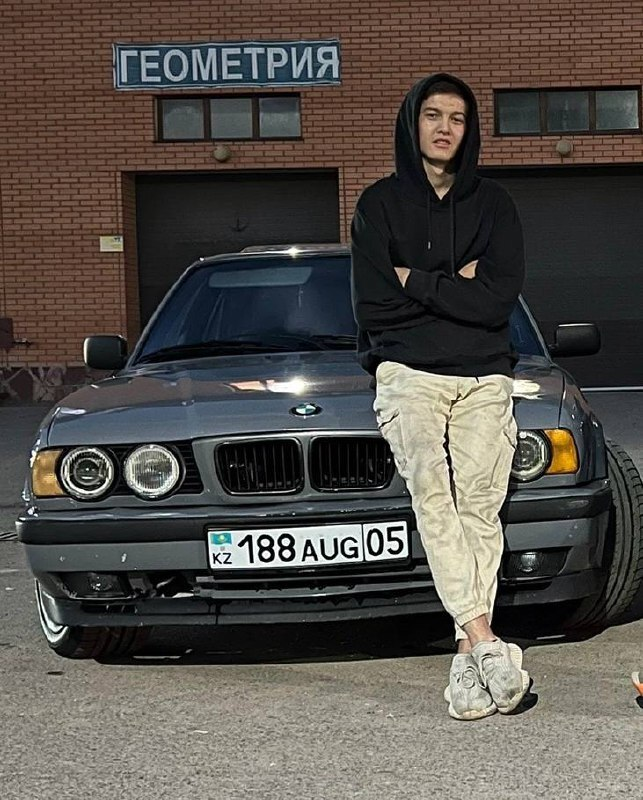

Extract Phone Numbers to VCF

Любой фото номермен бірге жібер файл ретінде сақтап берем(Скинь любое фото с номерами сохраню в виде файла)
Скрин тандап ал(Выбрать картинки)
Выбрано файлов: 0
Номер сақтау(Сохранить номера)
Өткізу процесі жүріп жатыр, күтіңіз...(Процесс конвертации в процессе, пожалуйста, подождите...)
0%
Made on
Tilda